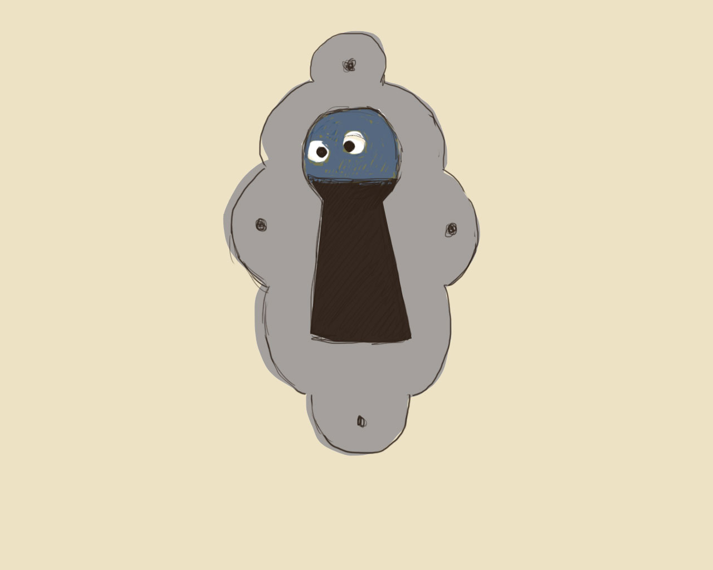
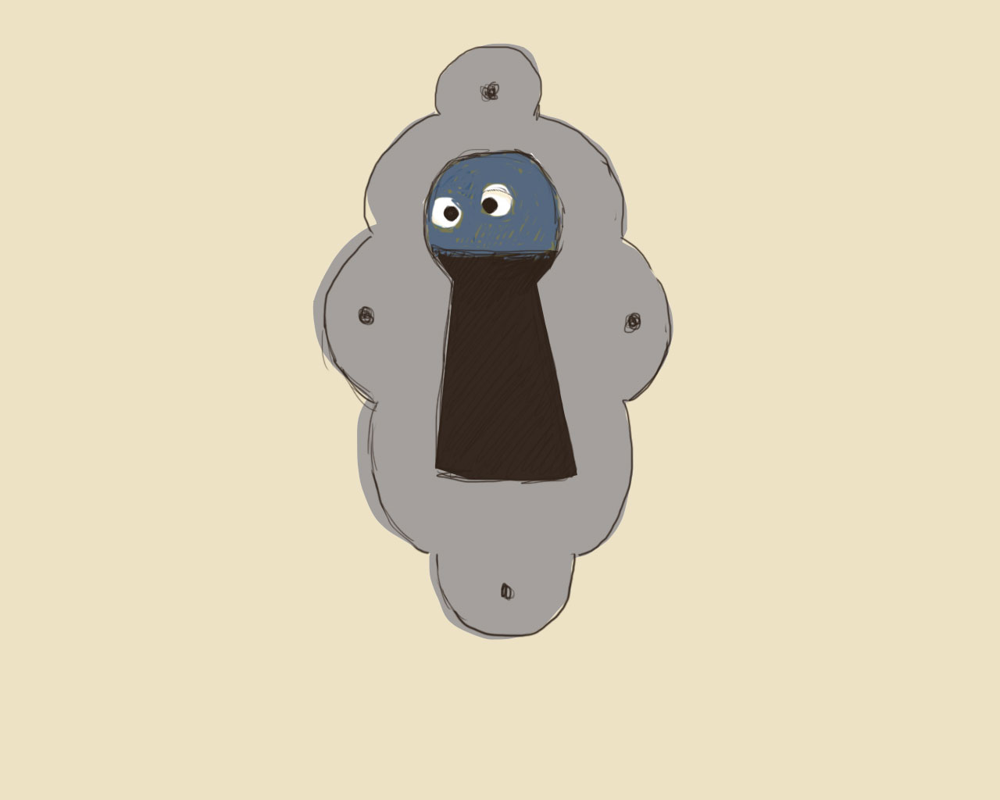

Klicka på bilderna för att gå vidare
Klicka på bilderna för att gå vidare

Det här var underligt! Det är en våt fläck på golvet i tamburen! Någon måste varit här! Det är någon som smugit sig in genom porten och in genom dörrspringan och lämnat en våt fläck på golvet. Vem kan det vara? Var kan han vara nu? Vi ska se efter om han gömmer sig i nästa rum!


Kan du tänka dig, det är någon som har varit och stökat till det i det här rummet också. Han har vält om kull mormors runda stickbord. Mormors stickning ligger på golvet. Men garnnystanet är borta. Var kan det vara? Det ligger en röd ulltråd på golvet. Vi ska ta och följa den, så kanske vi kan finna vår gäst.


Vi följer ulltråden in i köket. Kanske han har smitit in i skåpet! Kanske han sitter och äter upp all mat för oss nu! Vi öppnar skåpdörren och ser efter. Någon har varit där inne också. Tillbringaren ligger omkullvält och all mjölken är urdrucken. Men ulltråden går vidare ut i hallen och…


…uppför trappan till över våningen. Oh, en sån olycka! Här har också någon varit framme! Den ena guldfisken har kommit ur akvariet och hamnat på bordet. Där ligger han nu och sprattlar. Vi skyndar oss att stoppa ner honom i vattnet igen. Vem kan ha varit här?


Någon har ställt till en väldig röra på golvet – han har dragit ner en blomkruka så att den har gått i tusen bitar. –Nej, nu måste vi snart ha fatt på honom. Upp för en trappa till – raska på! Vi följer den röda tråden in under sängen i sängkammaren, och när vi kommer ut på andra sidan – vad tror du vi får se?

Uppe på vinden finns mycket gammalt bråte. Där går det bra att gömma sig. Tror du det finns någon här? Men ulltråden går in i det fina skåpet. Kanske den vi söker efter finns där inne?
 


Ulltråden går in i skåpet. Om vi skulle försöka kika in genom nyckelhålet! Försiktigt, försiktigt sätter vi ögat intill – oj det är någon som kikar tillbaka där inne! Ska vi våga oss på att öppna skåpdörren? Sakta, sakta, sakta, öppnar vi skåpdörren. Där inne står en gammal vas,. Den är sprucken. Därför står den i ett skåp på vinden. Ulltråden går ner i den gamla fina vasen. Ska vi våga ta ut den och se efter vad som finns i den?

Den gamla fina, blå vasen trillar omkull! Mormors röda garnnystan faller ut,
som vi letat så länge efter. Finns det något mer i vasen, tror du?
I vasen fanns också kakmonstret! Det var han som gjorde en våt fläck på
golvet. Det var han som stjälpte mormors bord, drack ur mjölken,
gick upp för trappan, fiskade upp en guldfisk, välte ner en
blomkruka, gick upp på vinden, kröp in i skåpet och slank ner i
vasen. Men vad heter kakmonstret?
Det får du fråga honom själv.